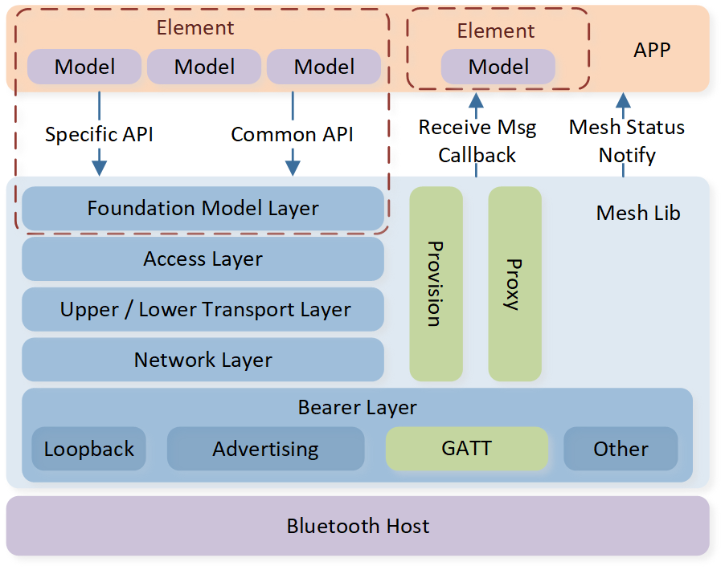

Bluetooth Mesh
Bluetooth Mesh is a mesh networking solution based on Bluetooth Low Energy technology. Mesh networks are mainly divided into two types: flooding-based mesh networks and routing-based mesh networks. Both network types have their advantages and disadvantages. Bluetooth Mesh refers to these message forwarding methods as Managed Flooding and Directed Forwarding, respectively.
LE communication channels are classified into two types: advertising channels and data channels. Mesh primarily operates on the advertising channel through passive scanning and advertising for receiving and sending, respectively. The data channel exists to ensure compatibility with existing devices that do not support advertising, enabling communication through the LE link.
Terminology and Concepts
The introduction is mainly divided into two parts: Mesh Concepts and Mesh Architecture.
Mesh Concepts
This section introduces the main concepts of Mesh. For detailed content of the Mesh Protocol, refer to Mesh Protocol Specification. For preliminary understanding, users can review Chapter 2 of the Mesh Protocol Specification Mesh system architecture.
Device UUID
Each device is assigned a unique 16-byte UUID (Device UUID) at the factory, used for uniquely identifying a mesh device without relying on a Bluetooth address. The UUID is required to identify devices during the establishment of a PB-ADV bearer link. However, once a mesh device obtains a mesh address, the mesh address can be used for unique identification.
Mesh Address
Apart from establishing an LE link, Mesh communication does not rely on Bluetooth addresses, meaning node Bluetooth addresses can be identical or vary randomly. Mesh defines a 2-byte long Mesh address, classified into Unassigned Address, Unicast Address, Virtual Address, and Group Address, as shown in the table below.
Range |
Address |
Description |
|---|---|---|
0x0000 |
Unassigned Address |
Default address not used for sending or receiving mesh messages |
0x0001-0x7FFF |
Unicast Address |
Unicast address: each element gets a unicast address |
0x8000-0xBFFF |
Virtual Address |
Virtual address generated by label UUID; does not require centralized management |
0xC000-0xFFFF |
Group Address |
Group address: freely assigned (0xC000-0xFEFF) and fixed group (0xFF00-0xFFFF) |
Fixed group addresses are defined as follows. For more information, please refer to the Mesh Protocol Specification section Group Address.
Values |
Fixed Group Address Name |
|---|---|
0xFFFB |
all-directed-forwarding-nodes |
0xFFFC |
all-proxies |
0xFFFD |
all-friends |
0xFFFE |
all-relays |
0xFFFF |
all-nodes |
Mesh addresses are not set at the factory; they are managed and assigned by the user. During the provisioning process, users assign unicast addresses to devices, ensuring each device gets a unique unicast address. A mesh device may have multiple unicast addresses, with each element assigned a unique, continuous unicast address. Multiple addresses are designed to distinguish between repeated functional modules, or models, on a mesh device.
Application Model
LE communication is one-to-one (master to slave), whereas mesh networks are many-to-many. Thus, nodes in a mesh network do not inherently know other nodes' existence. The provisioner acts as a third party to link nodes together. For example, after manufacturing, a common switch does not initially control any specific lights. A provisioner uses the configuration client to configure the switch to publish messages (setting the destination address to unicast or group address). For a group address, the corresponding light bulbs must be configured to subscribe to messages (adding the group address to their subscription list). The switch can then control a specific light, a group of lights, or all lights.
Mesh has standardized typical application scenarios, with applications organized into models on each mesh device. A model defines a model ID, a set of opcodes, and a set of states, specifying which messages to send and receive and which states to operate. Models are similar to LE GATT services, used to define a particular application scenario.
The concept of elements supports multiple identical models; each element gets a unique address. The first element (primary element) gets its element address during provisioning, with other elements sequentially following. For instance, a mesh device with two independently controllable lights uses elements to distinguish between the lights. Switching devices controlling these lights need to differentiate which light to control. Placing each light's model into separate elements ensures each light has a distinct mesh address for independent control. Light's models can also subscribe to the same group address for simultaneous control, maintaining both independent and simultaneous control functionality.
A device's elements and models are expressed through composition data page 0. Provisioners can discern a device's supported applications by accessing its composition data page 0.
Security
The mesh network incorporates numerous designs to safeguard security and privacy, protecting against common attacks like passive eavesdropping, man-in-the-middle attacks, replay attacks, trash can attacks, and brute force attacks.
All mesh messages within the mesh network are encrypted and verified to prevent eavesdropping or tampering. The network's key structure is split into two layers: NetKey and AppKey, with each layer supporting up to 4096 keys identified by a 12-bit index. An AppKey must be bound to a NetKey and can only bind to that specific NetKey. Messages sent at the application layer are encrypted and verified using both the AppKey and NetKey layers; messages received are decrypted and verified in the reverse order. This dual-layer key system prevents relay nodes from eavesdropping or tampering with messages. For instance, if node A sends data to node C through node B, and all share the same NetKey while only A and C share the same AppKey, the application layer communication between A and C remains confidential to B. Node B merely helps forward the message at the network layer using the NetKey, without access to the AppKey to eavesdrop or tamper with the application layer message.
NetKey supports multiple keys, enabling the division of network ranges and the isolation between devices. The key index of 0 is the primary network key, with the rest being other sub-network keys. Only nodes in the primary network can participate in the IV Update Procedure and propagate IV update information to other sub-nodes within sub-networks. In other words, only primary network nodes can update IV index network parameters, while sub-network nodes can only passively receive IV index updates. This unequal network key design aims to restrict the frequency of data transmission by sub-network nodes, preventing the potential overuse of IV index updates by sub-network nodes, which could otherwise deplete the IV index and compromise network security. Typically, most nodes reside in the primary network, some nodes exist in both the primary network and a sub-network, and a few nodes are only in a sub-network. These few nodes can only communicate locally within the sub-network, thus limiting their communication range. For example, hotel guests can only control lights in their own rooms.
AppKeys also support multiple keys, with no differences between them. Different applications can use different keys to achieve application-level isolation. For instance, lighting control and door control can use different AppKeys. An application can also use multiple AppKeys. For example, a lamp may support two AppKeys: AppKey0 for User 0, and AppKey1 for User 1; if AppKey0 is deleted, User 0 can no longer control the light, while User 1 remains unaffected.
The NetKeys and AppKeys on a device are distributed and managed by the provisioner using the provisioning and Configuration Client. A provisioner acts as the network administrator, managing all keys and determining which keys each device in the network can use, while devices can only communicate if they share the same key, such as a light and its switch using the same key. The provisioning process distributes a mesh address and a single NetKey, after which further key management, such as adding NetKeys and AppKeys, is handled by Configuration Models through the Configuration Client.
The provisioning process also generates a special AppKey known as DevKey. DevKey is known only to the provisioner and the device, not shared with any other device, ensuring that the provisioner can communicate confidentially one-on-one with each device. Configuration is restricted to using DevKey, meaning only the provisioner can configure the device, since only the provisioner knows the DevKey of the device. For example, a switch can control the on/off state of a bulb but cannot reconfigure the grouping of the bulb.
Provisioning
By default, devices are shipped without an address or key and require provisioning by the provisioner. Once provisioned, the device is referred to as a node, though this text and samples do not strictly differentiate between the terms device and node. The provisioning process uses the ECDH algorithm for key negotiation and distribution, with authentication data for identity verification, preventing eavesdropping, brute force, and man-in-the-middle attacks.
Depending on the provisioning configuration, there are different modes. Public key exchange is categorized into OOB and no OOB, and authentication data exchange is divided into input OOB, output OOB, static OOB, and no OOB, allowing for up to eight different modes. At the application layer, devices may need to provide the stack with public/private keys and authentication data, while the provisioner might need to select the mode and provide the device's public key and authentication data.
The provisioning process can operate on advertising channels and data channels, corresponding to PB-ADV and PB-GATT transport layers, respectively. PB-ADV uses LE advertising to transmit provisioning PDUs for provisioning; PB-GATT requires establishing an LE link to transmit provisioning PDUs for provisioning within the Mesh Provisioning Service. Devices are required to support PB-ADV, and if they also support PB-GATT, the provisioner can choose either during provisioning.
Configuration
Network parameters are managed at the model layer, known as Configuration Models. Configurable network parameters include adding, deleting, or modifying NetKeys and AppKeys, key binding of models, message publication, subscription, obtaining the node's application structure Composition data page 0, the default TTL of nodes, supported features, network retransmission count, etc.
Network configuration is restricted to using the DevKey, meaning only the provisioner can configure network parameters of the nodes.
Proxy
Mesh primarily operates on advertising channels. For compatibility with devices that cannot flexibly advertise, mesh defines a proxy feature. Based on the LE GATT profile, it defines a proxy service, allowing these devices to connect to proxy-supporting nodes via LE links, thus integrating into the mesh network.
Mesh Architecture
As depicted in the figure below, the mesh architecture is divided into the bearer layer, network layer, lower transport layer, upper transport layer, access layer, foundation model layer, and model layer.
{kind=link}

Mesh System Architecture
Model Layer (Foundation)
Models define a set of states and operations for specific applications, identified by a Model ID, and are categorized into 16-bit SIG model ID and 32-bit vendor model ID. In practice, SIG Model ID is encoded to 32-bit Model ID. For example, the Model ID for configuration server and client is 0x0000 and 0x0001, but they are implemented as 0x0000FFFF and 0x0001FFFF, respectively, as illustrated below.
#define MESH_MODEL_CFG_SERVER 0x0000FFFF
#define MESH_MODEL_CFG_CLIENT 0x0001FFFF
Elements are used to isolate models with the same access layer opcode. Duplicate models will send or receive the same opcode, making it hard to distinguish the sender or receiver of the related access message. Elements are assigned different addresses, allowing the effective distinction of models by the source or destination address of messages. Mesh stack first creates an element, then registers a model under that element. If registering a duplicate model, it must be assigned to a different element, and the stack will check for conflicts within elements.
The Configuration Server Model, which is mandatory in the Mesh Protocol Specification, does not require APP registration; the stack automatically registers and handles it.
The Health Server Model is mandatory to register in the primary element, while other elements can create and register it based on needs.
After creating and registering elements and models, users can generate the composition data page 0 content, needing the APP to provide specific header information, including Company ID, Product ID, Version ID, RPL size, and supported features.
Example code for creating elements, registering models, and generating composition data page 0.
void mesh_stack_init(void)
{
......
/** create elements and register models */
mesh_element_create(GATT_NS_DESC_UNKNOWN);
health_server_reg(0, &health_server_model);
ping_control_reg(ping_app_ping_cb, pong_receive);
compo_data_page0_header_t compo_data_page0_header = {COMPANY_ID, PRODUCT_ID, VERSION_BUILD};
compo_data_page0_gen(&compo_data_page0_header);
......
}
Access Layer
The Access Layer defines the message format for upper layer applications, including operation codes, which are referred to as access opcodes. All application messages must include a unified opcode. The Mesh Protocol Specification defines some opcodes and also reserves space for vendor-defined opcodes. Vendor-defined opcodes are 3 bytes long, where the first byte's high two bits are set to 1, the lower 6 bits are vendor-defined opcodes, and the next two bytes are the Company ID, meaning each company can only define up to 64 opcodes.
As shown in the code below, 0xC0 indicates the 0th manufacturer-specific opcode, and 0x005D corresponds to Realtek's Company ID, which needs to be filled in by byte order.
#define MESH_MSG_PING 0xC05D00
Access layer messages are first encrypted using the AppKey by the transport layer, and the Transport layer MIC¹ checksum length supports 4 bytes and 8 bytes. If a 4-byte transport layer MIC is used, the maximum length of an access layer message is 380 bytes; if an 8-byte transport layer MIC is used, the maximum length is 376 bytes.
Transport Layer (Upper & Lower)
The transport layer handles application layer encryption and decryption, friendship maintenance, heartbeat, directed forwarding maintenance, and segmentation & reassembly.
Access layer messages using a 4-byte transport layer MIC with a message length of 11 bytes or less (including the access opcode), and if not explicitly requiring segmented packet transmission, will not be segmented but rather sent as a single advertising packet. Conversely, access messages will be segmented and sent out in one or multiple advertising packets depending on message length, and the receiving end will be required to acknowledge the transport layer.
Network Layer
The Network Layer handles network layer encryption, decryption, obfuscation, and relay.
Bearer Layer
The Bearer Layer is divided into loopback bearer, advertising bearer, GATT bearer, and other bearers.
The loopback bearer refers to the self-sending and receiving channel, used for communication between models.
The advertising bearer uses LE advertising and LE scan to transmit and receive data, and is used for communication between devices.
The GATT bearer uses the proxy protocol to transmit and receive proxy PDUs between two devices over a GATT connection. It is primarily intended to enable devices that are not capable of supporting the advertising bearer to participate in a mesh network.
Other bearer refers to other interfaces used to extend the mesh network at the bearer layer. For example, a Gateway can connect the mesh network to an Ethernet network via the other bearer,
allowing the mesh network to access the Internet. The interface for registering the send message function in the other bearer is bearer_other_reg() and the function for receiving messages is bearer_other_receive().
Feature Set
- Relay
Receive and retransmit mesh messages over the advertising bearer to enable larger networks.
- Proxy
Receive and retransmit mesh messages between GATT and advertising bearers.
- Low Power
Operate within a mesh network at significantly reduced receiver duty cycles only in conjunction with a node supporting the Friend feature.
- Friend
Help a node supporting the Low Power feature to operate by storing messages destined for those nodes.
- Enhanced Provisioning Authentication
Support more algorithms in the provisioning protocol.
- Remote Provisioning
Allows adding unprovisioned devices to a Bluetooth mesh network when the provisioner is beyond immediate radio range of the unprovisioned device. Additionally, the provisioner may change the device key of the mesh node using provisioning packets that are transported over the mesh network.
- Private Beacons
Privacy for Secure Mesh Beacons.
- Directed Forwarding
Help improve performance of a multi-hop network by selecting only a subset of nodes to relay a message from a source to a destination.
- Subnet Bridge
Subnet bridge for mesh network.
- Binary Large Object Transfer
Enable the transfer of binary large objects between Bluetooth mesh devices.
- Device Firmware Update
Enable a firmware upgrade of the Bluetooth mesh devices.
Provided APIs
The APIs provided by the Mesh Stack are listed in the table below.
Header File |
Description |
|---|---|
mesh_provision.h |
mesh provisioning protocol |
mesh_service.h |
mesh service advertising |
mesh_access.h |
mesh access layer |
mesh_transport.h |
mesh transport layer |
mesh_network.h |
mesh network layer |
mesh_bearer.h |
mesh bearer layer |
mesh_common.h |
mesh common part |
mesh_flash.h |
mesh flash storage |
mesh_node.h |
mesh node management |
mesh_api.h |
mesh application interface |
mesh_beacon.h |
mesh beacon |
mesh_config.h |
mesh configuration |
model_config.h |
model configuration |
provision_adv.h |
provisioning ADV bearer |
provision_device.h |
provisioning device APIs |
provision_generic.h |
provisioning generic layer |
provision_provisioner.h |
provisioning provisioner APIs |
proxy_protocol.h |
proxy protocol |
subnet_bridge.h |
subnet bridge |
directed_forwarding.h |
directed forwarding |
friendship_fn.h |
friend node |
friendship_lpn.h |
low power node |
heartbeat.h |
heartbeat |
provision_client.h |
provisioning service client |
provision_service.h |
provisioning service |
proxy_client.h |
proxy service client |
proxy_service.h |
proxy service |
remote_provisioning.h |
remote provisioning |
Functions
This section mainly introduces how to use and configure different functions or modules of the Mesh Stack.
Mesh GAP
Mesh operates on the advertising channel, sending data via advertising and receiving data via scanning. The LE advertising and scanning behaviors are periodic, while mesh usage of the advertising channel is more complex. For convenience, the Mesh stack encapsulates the LE GAP interface, known as Mesh GAP, and thus, the APP can no longer directly call the LE GAP interface.
Advertising
Mesh encapsulated advertising is a one-time action rather than a periodic one. There are no advertising interval parameters, nor are actions needed to enable or disable advertising.
The following example shows how to perform advertising. First, use gap_sched_task_get() to obtain a buffer, then use gap_sched_try() to send.
uint8_t vendor_data[] =
{
/* Flags */
0x02,
GAP_ADTYPE_FLAGS,
GAP_ADTYPE_FLAGS_LIMITED | GAP_ADTYPE_FLAGS_BREDR_NOT_SUPPORTED,
/* Local name */
0x07,
GAP_ADTYPE_LOCAL_NAME_COMPLETE,
'V', 'E', 'N', 'D', 'O', 'R',
};
bool advertising_transmit(void)
{
uint8_t *pbuffer = gap_sched_task_get();
if (pbuffer == NULL)
{
return false;
}
gap_sched_task_t *ptask = CONTAINER_OF(pbuffer, gap_sched_task_t, adv_data);
memcpy(ptask->adv_data, vendor_data, sizeof(vendor_data)); // set adv data
ptask->adv_len = sizeof(vendor_data); // set adv len
ptask->adv_type = GAP_SCHED_ADV_TYPE_IND; // set adv type
ptask->retrans_count = 3; // set adv retrans count
ptask->retrans_interval = 10; // set adv interval, ms
gap_sched_try(ptask); // send adv
return true;
}
Note
retrans_count and retrans_interval refer to the transmission count and interval for the one-time advertising action, and transmission stops afterward.
If the APP wants to perform periodic advertising, it needs to create a timer to send periodically.
For example, calling the function every 1 second will result in the device broadcasting 4 times at 10ms intervals each time.
Scanning
For mesh applications, scanning usually needs to be enabled continuously.
When the mesh stack starts, it decides whether to start scanning immediately based on the bg_scan bit set in the features configured in mesh_stack_init().
void mesh_stack_init(void)
{
......
/** configure node parameters */
mesh_node_features_t features =
{
.role = MESH_ROLE_DEVICE,
.relay = 1,
.proxy = 1,
.fn = 0,
.lpn = 0,
.prov = 1,
.udb = 1,
.snb = 1,
.bg_scan = 1, // enable background scan
.flash = 1,
.flash_rpl = 0
};
......
}
Scanning is controlled with gap_sched_scan();
The scan parameters can be set using gap_sched_params_set() which can be called before or after the mesh stack is started.
Initiating
Same as LE, without additional encapsulation. It can establish connections as a master.
Link
Same as LE, without additional encapsulation. It can pair and add GATT Server and GATT Client.
Mesh Stack GAP Behavior
The Mesh Stack has default GAP behavior requiring no user implementation.
- Beacon Advertising
- When the device is unprovisioned, it needs to send an Unprovisioned Device beacon.When the device is provisioned, it needs to send a Secure Network beacon.
- Service Advertising
- If the device supports PB-GATT and is unprovisioned, it needs to send provision advertising.If the device supports Proxy and is provisioned, it needs to send proxy advertising.
- Receive Scanning
- Mesh communication is real-time, and messages may need to be received at any moment. However, scanning consumes a lot of power. Users can reduce power consumption by setting scan parameters to lower the scan duty cycle, but this may sacrifice reliability and potentially miss some messages.
- Relay Scanning
- If the device supports relay, it must keep scanning enabled to better assist other devices in forwarding messages. Therefore, background scanning is typically enabled for relay nodes.
Device Information Configuration
The APP can call the gap_sched_params_set() interface to configure device name and appearance information. The specific code is as follows.
void mesh_stack_init(void)
{
......
/** set device name and appearance */
char *dev_name = "Mesh Device";
uint16_t appearance = GAP_GATT_APPEARANCE_UNKNOWN;
gap_sched_params_set(GAP_SCHED_PARAMS_DEVICE_NAME, dev_name, GAP_DEVICE_NAME_LEN);
gap_sched_params_set(GAP_SCHED_PARAMS_APPEARANCE, &appearance, sizeof(appearance));
......
}
Device UUID Configuration
Mesh nodes may have the same Bluetooth address or random Bluetooth addresses, thus requiring a device UUID to uniquely identify mesh nodes. Setting Device UUID code as follows.
void mesh_stack_init(void)
{
......
/** set device uuid */
uint8_t dev_uuid[16] = MESH_DEVICE_UUID;
device_uuid_set(dev_uuid);
......
}
Network Features and Parameters Configuration
Features supported, number of keys, virtual addresses, subscription list size, flash storage, advertising intervals, and other network parameters need to be configured by the APP based on actual requirements. The specific code is as follows.
void mesh_stack_init(void)
{
......
/** configure node parameters */
mesh_node_features_t features =
{
.role = MESH_ROLE_DEVICE,
.relay = 1,
.proxy = 1,
.fn = 0,
.lpn = 0,
.prov = 1,
.udb = 1,
.snb = 1,
.bg_scan = 1,
.flash = 1,
.flash_rpl = 1,
};
mesh_node_cfg_t node_cfg =
{
.dev_key_num = 2,
.net_key_num = 6,
.master_key_num = 3, // should be <= net_key_num
.app_key_num = 3,
.vir_addr_num = 3,
.rpl_num = 20,
.sub_addr_num = 10,
.proxy_num = 1,
};
mesh_node_cfg(features, &node_cfg);
......
}
Attention
If parameters related to mesh flash layout are modified in the configuration,
or if the number of registered elements or models changes,
the node will clear previously stored information during initialization
and revert to the unprovisioned state.
Parameters affecting the mesh flash layout include dev_key_num, net_key_num, master_key_num, app_key_num, vir_addr_num, rpl_num, sub_addr_num, and flash_rpl. With the support of new features, the aforementioned parameters may increase.
Mesh Log Configuration
The Mesh stack has multiple modules,
and each module's log levels can be independently switched on or off.
By default, all logs are enabled.
There are four log levels in total, ranked from high to low: LEVEL_ERROR with printe(), LEVEL_WARN with printw(), LEVEL_INFO with printi(), and LEVEL_TRACE with printt().
The lower the log level, the less important it is.
Since the log rate is limited, logs may be lost if too many are printed.
To ensure key logs are printed correctly, users can disable some less important logs.
The example below disables all LEVEL_TRACE logs for all mesh modules.
void mesh_stack_init(void)
{
......
/** set mesh stack log level, default all on, disable the log of level LEVEL_TRACE */
uint32_t module_bitmap[MESH_LOG_LEVEL_SIZE] = {0};
diag_level_set(LEVEL_TRACE, module_bitmap);
......
}
Provisioning
The device is not preloaded with any network information from the factory and needs to obtain address and NetKey network information from the provisioner through the provisioning process.
The device needs to configure its provisioning capabilities. The specific code is as follows.
void mesh_stack_init(void)
{
......
/** Configure provisioning parameters */
prov_capabilities_t prov_capabilities =
{
.algorithm = PROV_CAP_ALGO_FIPS_P256_ELLIPTIC_CURVE,
.public_key = 0,
.static_oob = 0,
.output_oob_size = 0,
.output_oob_action = 0,
.input_oob_size = 0,
.input_oob_action = 0
};
prov_params_set(PROV_PARAMS_CAPABILITIES, &prov_capabilities, sizeof(prov_capabilities_t));
......
}
Both the provisioner and the device need to register the callback handling functions for provisioning as shown below. Depending on the specific flow of provisioning, different handling needs to be completed in the provisioning callback.
void mesh_stack_init(void)
{
......
prov_params_set(PROV_PARAMS_CALLBACK_FUN, prov_cb, sizeof(_Bool(prov_cb_type_t, prov_cb_data_t)));
......
}
Provisioning between the provisioner and the device can be completed through two channels: PB-ADV or PB-GATT. The provisioning process can only begin once the channel is successfully established.
PB-ADV
Based on the device UUID, the provisioner calls pb_adv_link_open() to initiate the PB-ADV link establishment process.
In the prov_cb() callback function, the establishment status of the PB-ADV link is handled. The specific code is as follows.
bool prov_cb(prov_cb_type_t cb_type, prov_cb_data_t cb_data)
{
......
switch (cb_type)
{
case PROV_CB_TYPE_PB_ADV_LINK_STATE:
switch (cb_data.pb_generic_cb_type)
{
case PB_GENERIC_CB_LINK_OPENED:
data_uart_debug("PB-ADV Link Opened!\r\n>");
break;
case PB_GENERIC_CB_LINK_OPEN_FAILED:
data_uart_debug("PB-ADV Link Open Failed!\r\n>");
break;
case PB_GENERIC_CB_LINK_CLOSED:
data_uart_debug("PB-ADV Link Closed!\r\n>");
break;
default:
break;
}
break;
......
}
PB-GATT
Provisioner needs to actively establish an LE link with the device, discover the provisioning service, and enable CCCD.
Model Architecture
The Bluetooth SIG organization has defined many standard Models, most of which are already included in Realtek's SDK. To reduce the difficulty for APP development, the SDK encapsulates message processing between the Model layer and the Access layer, providing a series of predefined business messages for APPs, allowing them to focus solely on business logic development. For detailed information on Mesh Models, please refer to the Mesh Model Specification.
Message Callbacks
Before using a specific Model, a structure of Model information is defined as shown below, where users need to pay attention to the following three callback functions.
The
model_receive()function is a callback function for messages from the Access layer to the Model layer. Realtek's SDK already implements a defaultmodel_receive()function, but users can also replace it with a custom function.The
model_data_cb()function is a callback function for business logic processing from the Model layer to the APP layer. The APP needs to perform the appropriate actions based on the application scenario. This callback is encapsulated and passed to the APP only if the defaultmodel_receive()function is used. If the user customizes themodel_receive()function, this function can be ignored.The
model_send_cb()function is a callback function for the result of message sending from the Model layer. Users can determine whether they need to implement it based on their requirements.
typedef struct _mesh_model_info_t
{
/** provided by application */
uint32_t model_id; //!< being equal or greater than 0xffff0000 means that the model is a SIG model.
/** callback to receive related access msg
If the model doesn't recognize the access opcode, it should return false! */
model_receive_pf model_receive;
model_send_cb_pf model_send_cb; //!< indicates the msg transmitted state
model_pub_cb_pf model_pub_cb; //!< indicates it is time to publish
model_data_cb_pf model_data_cb;
#if MESH_MODEL_ENABLE_DEINIT
model_deinit_cb_pf model_deinit;
#endif
/** point to the bound model, sharing the subscription list with the binding model */
struct _mesh_model_info_t *pmodel_bound;
struct
{
uint8_t corresponding_present : 1;
uint8_t format : 1;
uint8_t extended_item_count : 6;
uint8_t corresponding_group_id;
struct _mesh_model_info_t *pmodel_extended_info;
};
/** configured by stack */
uint8_t element_index;
uint8_t model_index;
void *pelement;
void *pmodel;
void *pargs;
} mesh_model_info_t;
Message Definition
In the header file of each specific Model, there will be predefined business messages as shown below. Each message corresponds to a specific message structure, using the Generic_OnOff model as an example.
#define GENERIC_ON_OFF_SERVER_GET 0 //!< @ref generic_on_off_server_get_t
#define GENERIC_ON_OFF_SERVER_GET_DEFAULT_TRANSITION_TIME 1 //!< @ref generic_on_off_server_get_default_transition_time_t
#define GENERIC_ON_OFF_SERVER_SET 2 //!< @ref generic_on_off_server_set_t
typedef struct
{
generic_on_off_t on_off;
} generic_on_off_server_get_t;
typedef struct
{
generic_transition_time_t trans_time;
} generic_on_off_server_get_default_transition_time_t;
typedef struct
{
generic_on_off_t on_off;
generic_transition_time_t total_time;
generic_transition_time_t remaining_time;
} generic_on_off_server_set_t;
Message Send Handling
Mesh message sending requires specific parameters such as address, application key, and TTL. Addresses include the source address and destination address, which denote the sender and receiver of the message, respectively. The source address can only be the unicast address of the sender, a fixed value allocated by the provisioner and automatically configured by the stack. The destination address, on the other hand, can be any address type except for the unassigned address. It can be a unicast address or a multicast address.
The setting of Mesh message parameters depends on the message type.
When the message is a response to a request message, the destination address is the source address of the original request message, using the same AppKey. The setting of such passive message parameters, including the destination address, is also passive.
When the Mesh device proactively sends a message, it is referred to as publishing. These parameters are usually configured flexibly by the provisioner using the Publication Set message in the Configuration Model, and the stack will handle them automatically without APP intervention. For example, the message for turning on a switch light is dynamically configured to which light it is sent.
If the provisioner has not configured the model's publish parameters, the parameters required for the model to send a message also vary.
The provisioner's publish behavior and parameters should be specified by the user. For example, the provisioner configures different devices.
The model's message sending is relatively flexible and not restricted by the publish parameters, allowing the user to specify them freely. For example, the ping control model.
The model independently sets the publish parameters, such as preset negotiated destination address. The address can be a unicast address, multicast address, virtual address, or even 0xFFFF.
Publish Parameter Configuration
Users can determine whether the model has been set with the relevant publish parameters by the provisioner through the mesh_model_pub_check() function.
After the node receives the provisioner's publish parameter settings, the stack processes them and saves them to Flash.
Users can extract the default configuration and publish parameters through access_cfg() to preset parameters for sending messages.
If the user does not want to use the preset publish parameters, they can override the relevant parameters after calling access_cfg().
static mesh_msg_send_cause_t ping_control_send(uint16_t dst, uint8_t ttl, uint8_t *pmsg,
uint16_t msg_len, uint8_t app_key_index)
{
mesh_msg_t mesh_msg;
mesh_msg.pmodel_info = &ping_control;
access_cfg(&mesh_msg);
mesh_msg.pbuffer = pmsg;
mesh_msg.msg_len = msg_len;
mesh_msg.dst = dst; // rewrite dst
mesh_msg.ttl = ttl; // rewrite ttl
mesh_msg.app_key_index = app_key_index; // rewrite app key index
return access_send(&mesh_msg);
}
AppKey Selection
A device can have multiple AppKeys simultaneously, with the exact number depending on the configuration by the provisioner.
An AppKey is configured as the publish AppKey when access_cfg() is called.
If the publish AppKey is not configured, the APP must select a bound AppKey itself.
Warning
Models are not allowed to send messages using an unbound AppKey.
Each AppKey has a unique global index but is mapped to a local index in implementation. When the APP sends a message, it uses the local index of the AppKey.
If the model is bound to multiple AppKeys, any bound AppKey can be used to send a message by calling
mesh_model_get_available_key()to get a usable local index.If the model needs to use a specific AppKey, such as one specified by its global index, the local index can be obtained using
app_key_index_from_global().
TTL Selection
The TTL is configured as the publish TTL when access_cfg() is called.
If the publish TTL is not configured, it defaults to the device's default TTL (default 7).
The APP can modify the TTL parameter after calling access_cfg().
Message Receive Handling
This section primarily introduces how the APP obtains and processes messages after the node receives them.
Business Logic Handling
Most models have already implemented functional encapsulation, and the APP only needs to register the callback function for business logic processing with the model. At the Model layer, message parsing and message response when receiving messages have been processed. When the APP layer needs to participate in business logic processing, the Model layer will notify the APP through the registered callback.
The following sample shows a simple business logic for switching a light on and off.
First, define the structure of the Model and assign the specific processing function to the model_data_cb() function.
When a message is sent from the remote end to switch the light on or off,
the SDK will call the generic_on_off_server_data() function,
and fill in the corresponding information according to the message type.
After obtaining the on/off value from the specific message,
the APP executes the corresponding action for the light,
without having to worry about message processing between the Model layer and the access layer.
/** generic on/off server model */
static mesh_model_info_t generic_on_off_server;
/** light on/off state */
generic_on_off_t current_on_off = GENERIC_OFF;
/** light on/off process callback */
static int32_t generic_on_off_server_data(const mesh_model_info_p pmodel_info,
uint32_t type, void *pargs)
{
int32_t ret = MODEL_SUCCESS;
switch (type)
{
case GENERIC_ON_OFF_SERVER_GET:
{
generic_on_off_server_get_t *pdata = pargs;
pdata->on_off = current_on_off;
}
break;
case GENERIC_ON_OFF_SERVER_SET:
{
generic_on_off_server_set_t *pdata = pargs;
current_on_off = pdata->on_off;
ret = MODEL_STOP_TRANSITION;
}
break;
default:
break;
}
return ret;
}
/** light on/off model initialize */
void light_on_off_server_models_init(void)
{
/* register light on/off models */
generic_on_off_server.model_data_cb = generic_on_off_server_data;
generic_on_off_server_reg(0, &generic_on_off_server);
}
Get Source Address of Configuration Client
During provisioning procedure, the provisioner typically distributes keys, binds models, sets subscription addresses, etc. At this time, the provisioner sends messages to the configuration server model using the configuration client model, and these messages' source address is the provisioner's address.
Since the configuration process involves many network parameter operations, the configuration server is not visible to the user. Users who want to know the operations performed by the configuration client when configuring the configuration server and obtain the configuration client address can do so through the following method.
After creating the first element, register a new callback to the configuration server: cfg_server_receive_peek(), reference code is as follows.
bool cfg_server_receive_peek(mesh_msg_p pmesh_msg)
{
bool ret = cfg_server_receive(pmesh_msg);
if(ret)
{
/* The configuration client message can be peeked now! */
printi("cfg_server_receive_peek: cfg client addr = 0x%04x", pmesh_msg->src);
}
return ret;
}
......
void mesh_stack_init(void)
{
......
/** create elements and register models */
mesh_element_create(GATT_NS_DESC_UNKNOWN);
cfg_server.model_receive = cfg_server_receive_peek;
......
}
If the device needs to record the configuration client address, it can be stored in Flash. If the address has not changed, repeated storage is not necessary.
Friendship
To support low power devices, a friendship mechanism is required, where a friend node helps a low power node cache messages. The low power node typically reduces power consumption by adjusting the scan duty cycle.
Friendship consumes additional internal NetKey space. The number of friendships a friend node can set up and establish is smaller than the number of NetKeys. A low power node can only establish one friendship per NetKey, so the number of friendships is less than or equal to half the total number of NetKeys.
Friend Node
To use the friend node feature, users need to call fn_init() to initialize.
Low Power Node
To use the low power node feature, users need to call lpn_init() to initialize. To initiate the friendship establishment process, call lpn_req().
Transport Ping
For convenient testing of network layer communication, a custom ping/pong mechanism trans_ping() is implemented at the transport layer, carrying TTL information to calculate the number of hops.
This message directly utilizes the network layer's service and is encrypted with NetKey only.
After being provisioned, the device can use the transport layer's ping function to test whether the network layer is functioning correctly, even though the device has not yet obtained AppKey.
Remote Provisioning
When the distance between the provisioner and the unprovisioned device is too far, exceeding the direct wireless transmission range, the Remote Provisioning feature can be used. This feature utilizes the existing mesh network to transmit Provisioning PDUs and add the unprovisioned device to the network. Furthermore, the provisioner can use the Remote Provisioning feature to change the device key, node address, or composition data of a provisioned device.
Directed Forwarding
Directed forwarding helps enhance multi-hop network performance by relaying messages from the source node to the target node through a selected subset of nodes. This subset (including the source and target nodes) forms the path defined by directed forwarding. The path is identified by the source address and target address, which can be a unicast address, multicast address, or virtual address.
Directed forwarding consumes additional internal NetKey space, and a master key will derive a directed forwarding key, which can establish multiple directed forwarding paths.
Directed forwarding paths are classified as either non-fixed paths or fixed paths.
A non-fixed path is dynamically established by the directed forwarding node, controlled by the directed forwarding client, and is not stored in Flash.
A fixed path is added by the directed forwarding client through the directed forwarding model, remains existent until deleted by the directed forwarding client, and is stored in Flash.
Once a directed forwarding path is established, the source address can use the directed forwarding key to encrypt and send messages, which will only be relayed by the nodes on that path.
Users can call
df_cb_reg()to register a directed forwarding callback to get actions related to directed forwarding path discovery, establishment, release and so on.Users can call
df_path_discovery()to initiate the path discovery process, referring to the non-fixed path. In many scenarios, the path discovery process does not require user initiation. For example, if a model's publish policy is set to directed forwarding, the path discovery process will be automatically triggered when sending a message (with a TTL of 2 or higher).Users can call
df_path_dependents_update()to initiate the path dependents update process. In many scenarios, the path dependents update process does not require user initiation. For example, when the status of a dependent node changes, the supporting node may automatically trigger the path dependents update process.Users can call
df_path_solicitation()to initiate the path solicitation process. In many scenarios, the path solicitation process does not require user initiation. For example, when the low power node's subscription address list changes, the friend node may automatically trigger the path solicitation process.
Subnet Bridge
Nodes belonging to multiple subnets can support the subnet bridge feature. After configuration, nodes supporting the subnet bridge feature can retransmit messages from one subnet to another.
Binary Large Object Transfer
The BLOB Transfer Model can transmit data objects larger than the maximum Access Layer PDUs size and multicast them to multiple nodes simultaneously.
The BLOB receiver (BLOB transfer server) needs to call blob_transfer_server_init() to initialize before transmission.
The BLOB sender (BLOB transfer client) can use the model layer interface, or use the API blob_client_app.h that encapsulates the client behavior,
including the capabilities retrieve process blob_client_caps_retrieve(),
blob transfer process blob_client_blob_transfer(),
and transfer cancel process blob_client_transfer_cancel().
Device Firmware Update
Please refer to Mesh OTA Application Note.
Troubleshooting
The following are some common issues and considerations when using Mesh Stack.
Nodes Cannot Receive Messages
Users can register with rpl_cb_reg() to verify whether messages are filtered by the RPL mechanism.
The number of RPLs is determined during the stack initialization phase,
and the size should account for the number of nodes in the network that will communicate with it,
leaving some buffer for future network expansion.
void mesh_stack_init(void)
{
......
mesh_node_cfg_t node_cfg =
{
.dev_key_num = 2,
.net_key_num = 6,
.master_key_num = 3,
.app_key_num = 3,
.vir_addr_num = 3,
.rpl_num = 20,
.sub_addr_num = 10,
.proxy_num = 1,
};
mesh_node_cfg(features, &node_cfg);
......
}
Reuse the Addresses of Deleted Nodes
The mesh network has an RPL mechanism that stores the source address and sequence of received messages to prevent replay attacks, updating with each received message. If a new node reuses the same address and the RPL list of nodes in the network has already stored the sequence information of that address, communication between the new and old nodes will encounter issues. In fact, addresses that have been deleted cannot be directly reused. If users want to reuse an address, please refer to Mesh Protocol Specification section 3.11.7 Node Removal Procedure.
Sample Projects
For Mesh Provisioner role reference example, see Mesh Provisioner.
For Mesh Device role reference example, see Mesh Device.